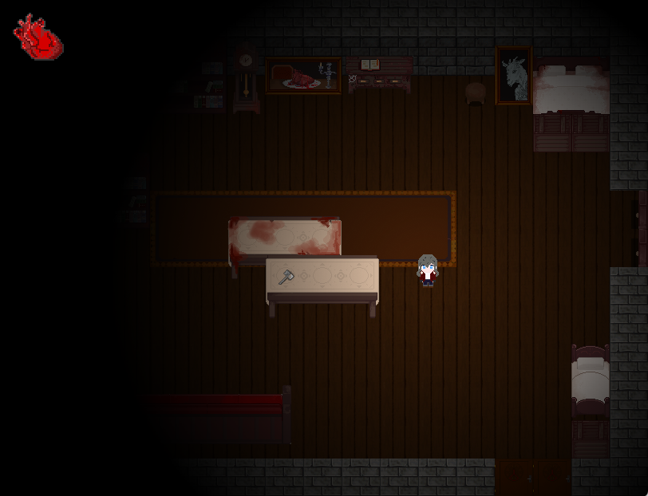

The SlaughterHouse é um jogo top-down de puzzles e terror, onde o jogador explora uma casa assombrada enquanto é perseguido por uma criatura.
🎮 Jogar no Itch.io⬅ Voltar

The SlaughterHouse é um jogo top-down de puzzles e terror, onde o jogador explora uma casa assombrada enquanto é perseguido por uma criatura.
🎮 Jogar no Itch.io